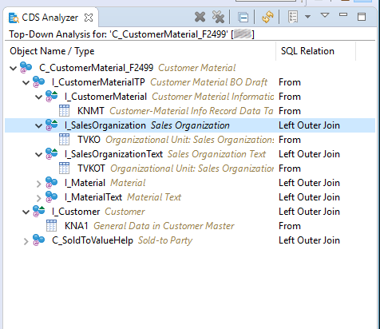
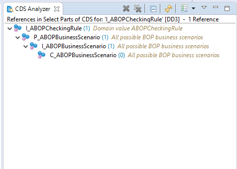
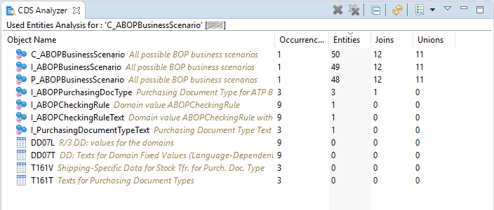
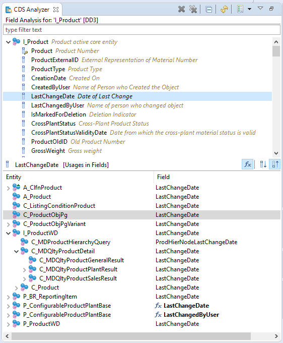
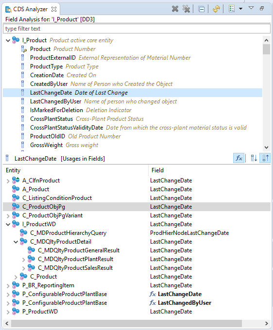

CDS Analyzer
The CDS Analyzer offers the following types of analysis for a CDS view and/or Database Table/View
To analyze a CDS view (or Database Table/View) perform one of the following actions:
- via the context menu of a CDS or Database Table editor
- via the context menu of a selected CDS View or Database Table/View in the Project Explorer
- via the context menu of a selected CDS View or Database Table/View in the Search View (if ABAP Object Search + was used)
Top-Down Analysis

Figure 1: Example of Top-Down Analysis
Where-Used Analysis

Figure 1: Example of Where-Used Analysis
Used Entities Analysis

Figure 1: Example of Used Entities Analysis
Field Analysis
 Figure 1: Example of Field Analysis (Top-Down)

Figure 1: Example of Field Analysis (Where-Used)
Figure 1: Example of Field Analysis (Top-Down)

Figure 1: Example of Field Analysis (Where-Used)